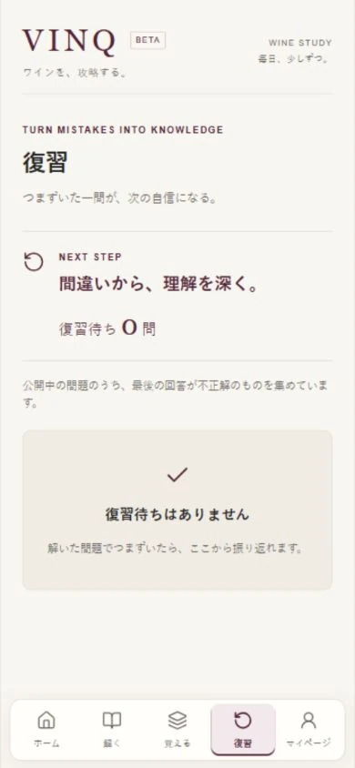

WHY VINQ
問題はたくさんある。
でも、「どう勉強するか」は難しい。
ワインの資格試験には、覚えるべき知識が膨大にあります。教本、参考書、問題集、オンライン講座など、優れた教材も数多く存在します。
一方で、実際に勉強を始めると、別の難しさが生まれます。
- 今日は何を勉強すればいいのか。
- 自分は何が苦手なのか。
- 間違えた問題を、いつ復習すればいいのか。
- 本当に成長しているのか。
VINQは、教材そのものを増やすことよりも、「学習の進め方そのものを設計する」ことに着目して開発を始めました。
PRODUCT
問題集ではなく、学習システム。
VINQでは、毎日の学習を一つの流れとして設計しています。現在のVINQで利用できる、基本の学習体験です。
今日の学習に取り組む
ホームの「今日の10問」と学習実績。
画面を拡大問いから知識を思い出す
「覚える」の暗記カード画面。クイズの回答画面とは異なります。
画面を拡大
間違えた問題を振り返る
復習画面。撮影時は復習待ちが0問の状態です。
画面を拡大積み重ねた学びを確認
マイページの成長表示。全期間の正答率や今週の学習を確認できます。
画面を拡大VINQ本番環境から取得した実画面です（2026年9月20日撮影）。数値は撮影時の表示です。成長画面は個人情報を含まない範囲を掲載しています。端末フレームは紹介ページ上の装飾です。
- 01
DAILY 今日の学習
今日の学習に取り組む。途中から再開できるので、自分のペースで続けられます。
- 02
RESULT 理解度の確認
結果から現在の理解度を確認する。正解数や正答率を見ながら、今回の学習を振り返ります。
- 03
REVIEW 間違いを復習
間違えた問題だけを、その場ですぐに復習する。理解が曖昧なところを、そのままにしません。
- 04
GROWTH 成長と次の学び
学習履歴から、自分の成長と次に学ぶ内容を確認する。得意・苦手を知り、次の学習へつなげます。
- 学習
- 結果
- 弱点発見
- 復習
- 成長
↻ そして、また次の学習へ。
このサイクルを毎日無理なく繰り返せることを、VINQでは重視しています。
DIFFERENCE
VINQが競うのは、
問題数ではありません。
ワイン学習サービスには、すでに大量の問題を収録した優れたサービスがあります。VINQは、そこにさらに多くの問題を追加することを、最大の価値とは考えていません。
大切なのは、どれだけ問題を解いたかではなく、どれだけ理解し、定着したか。
今日の学習をする、結果を見る、苦手を知る、間違いを復習する、成長を確認する。そこまでを一つの学習体験として設計します。
Question Bankではなく、
Learning System。
問題を提供するサービスから、学習を支えるサービスへ。
LEARNING METHOD
ワインのプロ × 勉強のプロ。
「何を学ぶか」だけでなく、「どう学べば効率よく身につくか」。VINQでは、その両方を重視しています。
ワインの現場を知るソムリエの視点と、高い学習経験を持つ専門家の視点を組み合わせ、学習設計そのものをブラッシュアップしていく方針です。
現在は監修体制を整備中です。将来的には、問題の出題方法、復習タイミング、弱点分析などにも、その考え方を反映していきます。
LEARN → EXPERIENCE
学んだ先に、
本物のワイン体験を。
VINQが目指しているのは、オンラインだけで完結するワイン学習ではありません。
実際に見る。香りを取る。飲む。人と話す。ワインは、本を読んで覚えるだけでなく、こうした時間を通して知識が体験へと変わっていきます。
そのために、学習とリアルなワイン体験をつなぐ仕組みとして、VPを構想しています。
- 学ぶ
- VPが貯まる
- 実店舗を訪れる
- ワインを体験する
- また学ぶ
↻ 学びと体験を、次の一杯へ。
VISION
学ぶ・飲む・出会うをつなぐ。
資格試験の合格は、一つの通過点。新しいワインに出会う。ワインバーを訪れる。生産者を知る。講師から学ぶ。イベントに参加する。そして、また学びたくなる。
VINQは、そんな循環を生み出したいと考えています。
ワインを学ぶ人、教える人、提供する人をつなぐプラットフォームへ。日々の小さな学びから、ワインの楽しみ方が広がる未来を目指します。
ABOUT
山崎 翔
飲食DXプロデューサー / ソムリエ
ワイン・飲食の現場の課題を、AI・Web・テクノロジーで解決するサービスを企画・開発。東京・湯島のワインバーTsuki-akariを運営しています。VINQのほか、AKISEKI等、飲食現場から生まれたDXサービスに取り組んでいます。
VINQについてのお問い合わせ